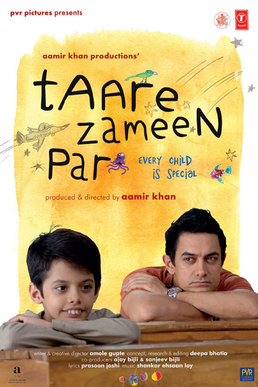

Harry Potter Series

This my favourite moviee series of all time. The movies follow the journey of a young wizard named Harry Potter and his friends Hermione Granger and Ron Weasley as they attend Hogwarts School of Witchcraft and Wizardry. The overarching plot revolves around Harry's struggle against the dark wizard Lord Voldemort, who seeks to conquer the wizarding world and subjugate non-magical people. The series consists of eight movies. They are:
- Harry Potter and the Philosophers' Stone (2001)
- Harry Potter and the Chamber of Secrets (2002)
- Harry Potter and the Prisoner of Azkaban (2004)
- Harry Potter and the Goblet of Fire (2005)
- Harry Potter and the Order of the Phoenix (2007)
- Haary Potter and the Half-Blood Prince (2009)
- Harry Potter and the Deathly Hallows part 1 (2010)
- Harry Potter and the Deathly Hallows part 2 (2011)
The Shawshank Redemption

Andy, a successful banker is arrested for the murder of his wife and her lover. The film follows Andy's experiences in Shawshank, showcasing his resilience, friendship with fellow inmates, and his enduring hope for freedom. Despite the challenges and injustices within the prison system, Andy maintains his dignity and works towards creating a sense of hope for himself and his fellow inmates. This is my second all time favourite movie.
Tare Zameen Par
The story revolves around Ishaan Awasthi, an eight-year-old boy who struggles with academics and feels misunderstood by his family and teachers. He is eventually sent to a boarding school where he meets an art teacher named Ram Shankar Nikumbh. Nikumbh recognizes Ishaan's artistic talent and the underlying issue of dyslexia. The teacher then takes it upon himself to help Ishaan overcome his learning difficulties and discover his true potential. This is my third favourite movie of all time.